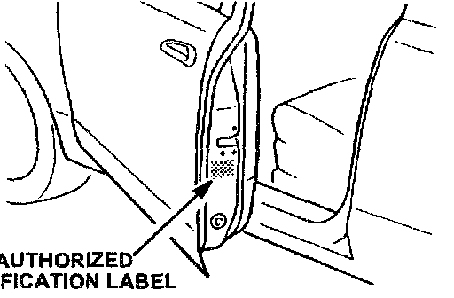
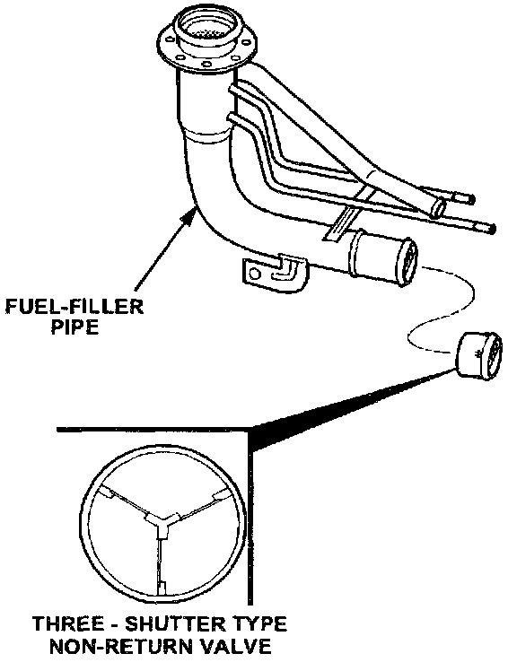

Attachment II
A. VEHICLE INSPECTION PROCEDURE
1. Check the driver's door for Authorized Modification Label # 88004. Refer to illustration.
^ If the Recall Label # 88004 is present and the vehicle history shows the recall as not done, contact the Warranty Department. They will update the vehicle history.
^ If the Recall Label # 88004 is not present, proceed to "B. NON-RETURN VALVE REPLACEMENT PROCEDURE".
B. NON-RETURN VALVE REPLACEMENT PROCEDURE

Replace the single-shutter type non-return valve located at the end of the fuel-filler pipe with the three-shutter type non-return valve as shown below. Refer to the Workshop Manual (section 01-14). Proceed to "C. AUTHORIZATION MODIFICATION LABEL INSTALLATION".
C. AUTHORIZATION MODIFICATION LABEL INSTALLATION
Complete an "Authorized Modification Label" with the recall number written on the label and affix it to driver's side door under the door latch. Refer back to the illustration under "A. VEHICLE INSPECTION PROCEDURE".